Benutzerhandbuch¶
Detaillierte Fachkapitel¶
- Tachodaten-Auswertung Personal und Fuhrpark
- Fahrerkarten-Auswertung – alle Tabs
- Massenspeicher-Auswertung – alle Tabs
- Führerscheinkontrolle und RFID/NFC
- Fahrzeugkosten und Gutschriften
- Fremdrechnungen – Workflow und alle Tabs
- E‑Rechnung und XRechnung importieren
- Kostenanalyse und Reporting
- Positionskarten für C- und M-Daten
Diese Kapitel verwenden eine ausschließlich temporär erzeugte, anonymisierte Kopie der Entwicklungsdatenbank. Aktivitäten, Zeitangaben, Beträge und freigegebene Koordinaten bleiben fachlich repräsentativ; Personen-, Karten- und Fahrzeugidentitäten wurden deterministisch ersetzt.
1. Anmeldung und Arbeitsbereich¶
Starten Sie FLEET Mira über die installierte Verknüpfung. Nach dem Splash-Screen erscheint die Anmeldung. Eine neue Installation verwendet einmalig admin / admin und verlangt anschließend ein sicheres neues Kennwort. Wenn ein Administrator Single Sign-on eingerichtet und Ihr Konto vorab zugeordnet hat, verwenden Sie stattdessen Mit Microsoft anmelden oder Mit Google anmelden. Microsoft Entra ID SSO ist derzeit Beta und noch nicht mit einem realen Kundenmandanten Ende-zu-Ende validiert. Verwenden Sie bis zur kundenspezifischen Abnahme den lokalen Login als Rückfallmöglichkeit und wenden Sie sich bei Problemen an Ihren Administrator. Einrichtung und Fehlerbehebung beschreibt das Administratoren- und Integratorenhandbuch.
Abbildung: Splash-Screen von FLEET Mira vor der Anmeldung.
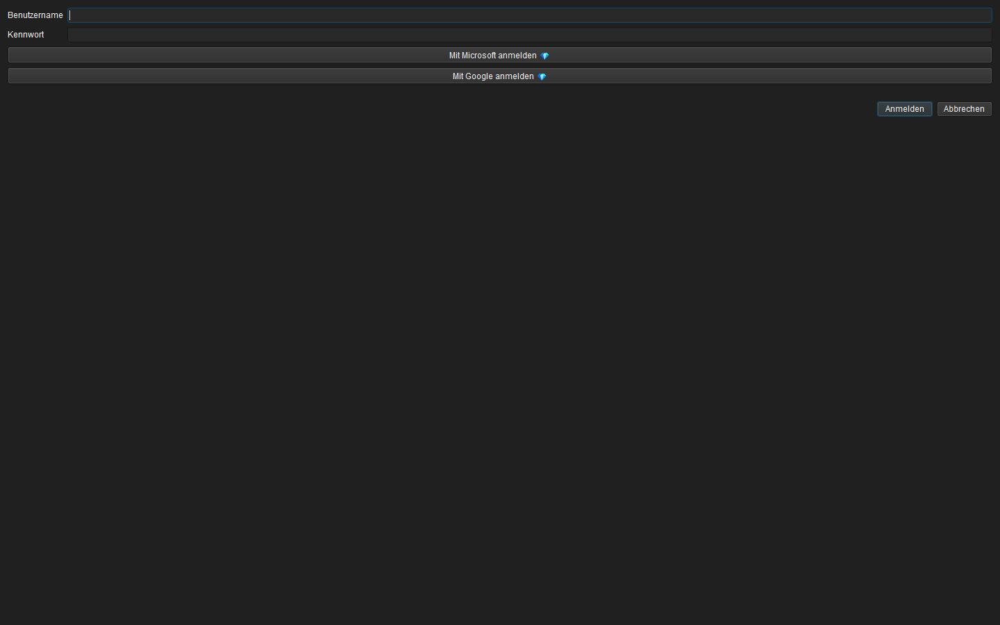
Abbildung: Lokale Anmeldung, Microsoft Entra SSO im ungetesteten Beta-Status und regulär unterstütztes Google-SSO.Nach jeder Anmeldung ist das Dashboard aktiv. Über die obere Navigation wechseln Sie zwischen den fünf Hauptbereichen. Längere Vorgänge zeigen einen nichtmodalen Ladestatus und können abgebrochen werden; andere Tabs bleiben bedienbar.
Benutzerprofil¶
Unter Benutzer → Mein Profil ändern Sie Anzeigename, E-Mail, Sprache und Region. Sprache oder Region werden nach der nächsten Anmeldung vollständig aktiv. Tabellenlayouts, Filter, Splitterpositionen und Spaltenreihenfolgen werden benutzerbezogen gespeichert.
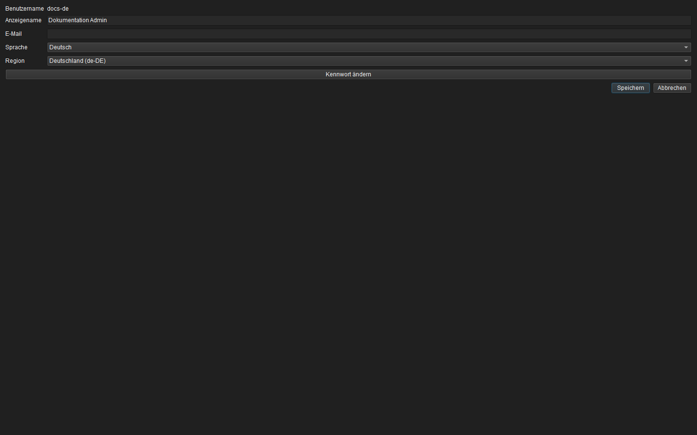
Abbildung: Benutzerbezogene Sprach-, Regions- und Profileinstellungen.Tabellen und Kontextmenüs¶
- Ein Klick auf den Spaltenkopf sortiert; ein weiterer Klick kehrt die Richtung um.
- Spaltenköpfe lassen sich per Drag&Drop verschieben, Begrenzungen ändern die Breite.
- Über das Kontextmenü eines Spaltenkopfs können Spalten ein-/ausgeblendet werden, sofern angeboten.
- Rechtsklick auf eine Datenzeile öffnet fachliche Aktionen; zuerst wird immer die Zeile unter dem Mauszeiger markiert.
- Markierte Zeilen verwenden dunkelblauen Hintergrund und weiße Schrift und bleiben trotz Statusfarben lesbar.
2. Dashboard¶
Die sechs Kacheln führen direkt zu gefilterten Arbeitsbereichen:
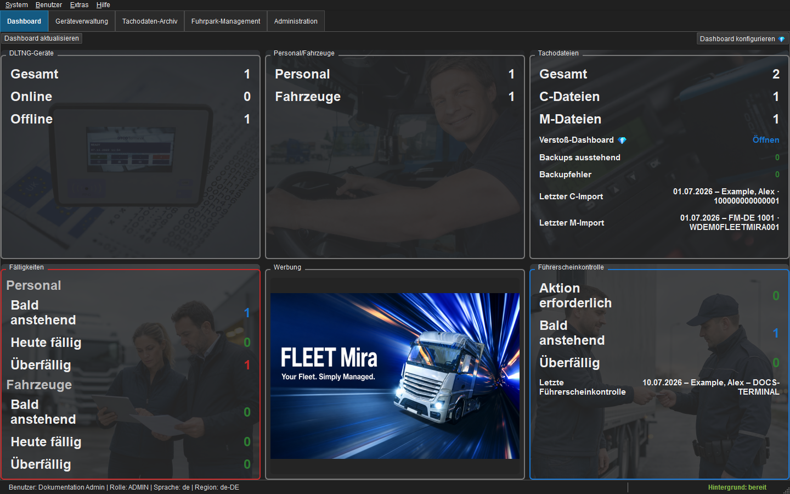
Abbildung: Dashboard mit anonymisierten Demonstrationsdaten und direkten Sprungzielen.- FLEET Mira-Geräte: Gesamtzahl, online und offline.
- Personal/Fahrzeuge: aktive Stammdatensätze.
- Tachodateien: Gesamt, C-/M-Dateien, Backuprückstand/-fehler und letzte Importe.
- Fälligkeiten Personal / Fahrzeuge: bald anstehend, heute fällig und überfällig.
- Führerscheinkontrolle: offene Klärfälle, bald anstehende/überfällige FSK und letzte erfolgreiche Kontrolle.
Klicken Sie eine einzelne Kennzahl an, um die exakt vorgefilterte Liste zu öffnen. Nach umfangreichen Importen kann Dashboard aktualisieren verwendet werden.
3. Geräteverwaltung¶
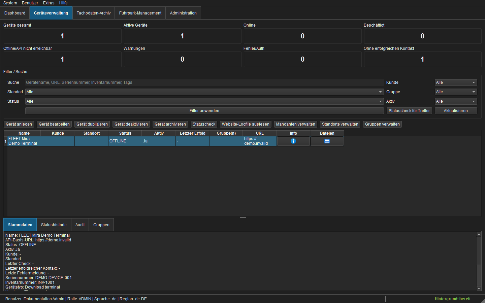
Abbildung: Geräteliste und Arbeitsbereich der Geräteverwaltung.Die Geräteliste lässt sich nach Name, Mandant, Standort, Gruppe und Status filtern. Abhängig von der Berechtigung stehen Werkzeugleiste und Kontextmenü zur Verfügung:
- Gerät anlegen, bearbeiten oder duplizieren;
- Status eines Geräts oder der Trefferliste prüfen;
- eingebettete oder externe Weboberfläche öffnen;
- Systeminformationen, entfernte Dateien und Website-Log abrufen;
- Gerät nach Bestätigung deaktivieren oder archivieren.
Die unteren Detailtabs zeigen Stammdaten, Dateien, Statushistorie und Audit. Heruntergeladene Gerätedateien durchlaufen erst über den regulären Importpfad das Archiv.
4. Quellen und Downloadtasks¶
Unter Administration → Quellen richten Sie FTP-, DLT-API- und SFTP-Zugänge sowie lokale Ordner oder UNC-Serverfreigaben ein. Beim ersten SFTP-Verbindungstest liest die Anwendung den SSH-Host-Key aus und übernimmt dessen SHA-256-Fingerprint erst nach ausdrücklicher Bestätigung. Testen Sie die Verbindung, bevor Sie die Quelle einem Task zuordnen. Zugangsdaten und SFTP-Schlüsselpassphrasen werden geschützt und nicht protokolliert.
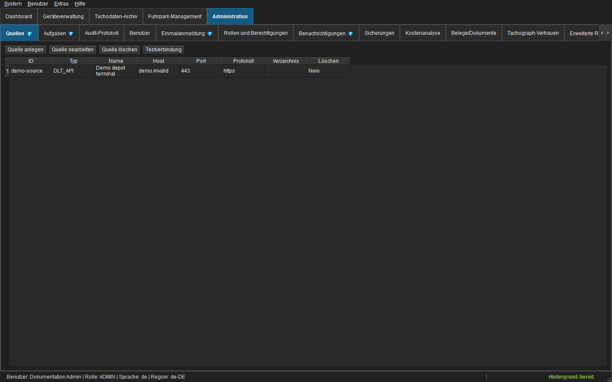
Abbildung: Verwaltung der automatischen Importquellen.Unter Administration → Tasks konfigurieren Sie Quellen, Dateimuster, Rekursion, Zeitplan, Archivverhalten und optional den strengen Cloud-Backupmodus. Sofort starten zeigt je Quelle Status, Fortschritt und laufend aktualisierte Logmeldungen. RFID-Terminaldateien benötigen das Muster RFID_*.CSV.
Die Option Administration → Einstellungen → USB-Wechseldatenträger automatisch importieren durchsucht neu eingesteckte Datenträger rekursiv nach DDD- und RFID*.CSV-Dateien. Sie wirkt nur, solange FLEET Mira geöffnet ist oder im System-Tray läuft; die Quelldateien bleiben auf dem Datenträger erhalten.
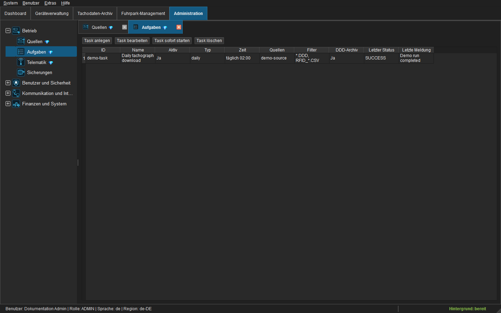
Abbildung: Zeitgesteuerte und manuell ausführbare Downloadtasks.Im strengen Modus wird eine Terminaldatei erst nach verifiziertem Cloudbackup als verarbeitet markiert oder gelöscht.
5. Tachodaten-Archiv¶
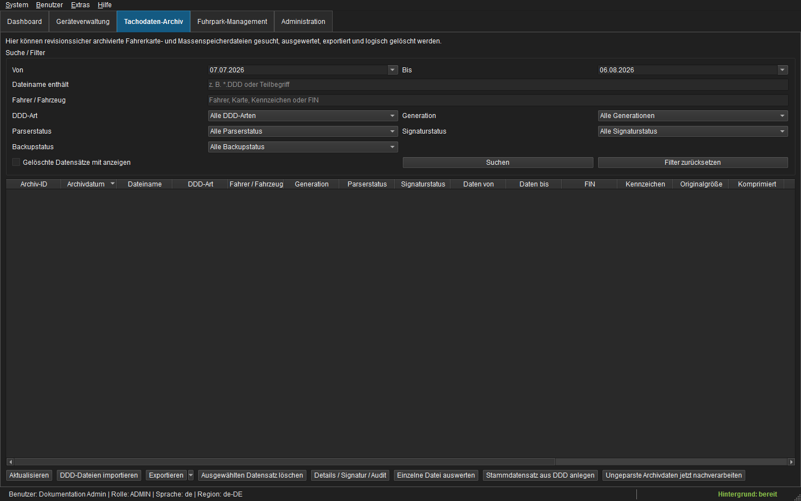
Abbildung: Filterbares C-/M-Tachodaten-Archiv mit Statusspalten.Das Archiv enthält Fahrerkarten-C-Dateien und Massenspeicher-M-Dateien. Filter stehen für Datum, Dateiname, Fahrer/Fahrzeug, DDD-Art, Generation, Parserstatus, Signaturstatus, Lösch- und Backupstatus zur Verfügung.
Import und Status¶
- DDD-Dateien importieren übernimmt eine oder mehrere lokale Dateien.
- Der binäre Inhalt bestimmt C/M; der Dateiname ist nur ein Hinweis.
- Nach erfolgreichem Parse werden strukturierte Details gespeichert, ohne das Original zu verändern.
VALIDbedeutet: alle vorhandenen Signaturen und die Zertifikatskette wurden verifiziert.INVALIDoderUNVERIFIABLEführen zur Quarantäne. Die Datei bleibt sichtbar/exportierbar, darf aber keine vertrauenswürdige Verknüpfung oder kombinierte Auswertung speisen.
Öffnen, Export und Löschen¶
- Per Doppelklick oder Auswertung öffnen startet die passende C-/M-Auswertung.
- Eine markierte Zeile exportiert die Original-DDD; mehrere Zeilen oder die aktuelle Ansicht werden als ZIP exportiert.
- Logisches Löschen benötigt einen Grund und wird auditiert; ein verifiziertes Cloudbackup wird nicht automatisch gelöscht.
- Details / Signatur / Audit erläutert Hashwerte, Parserwarnungen, Signatursektionen und Historie.
Backupstatus¶
Verifiziert erscheint erst nach vollständigem Upload und Remote-Hashprüfung. Über das Kontextmenü kann die Sicherung erneut gestartet, geprüft oder wiederhergestellt werden. Backupfehler sind auch vom Dashboard erreichbar.
6. Fahrerkarten-Auswertung¶
Der Kopf zeigt Fahrer, Kartennummer und ausgewählte Archivdatei. Ausschließlich die ausgewählte C-Datei ist Basis der Auswertung.
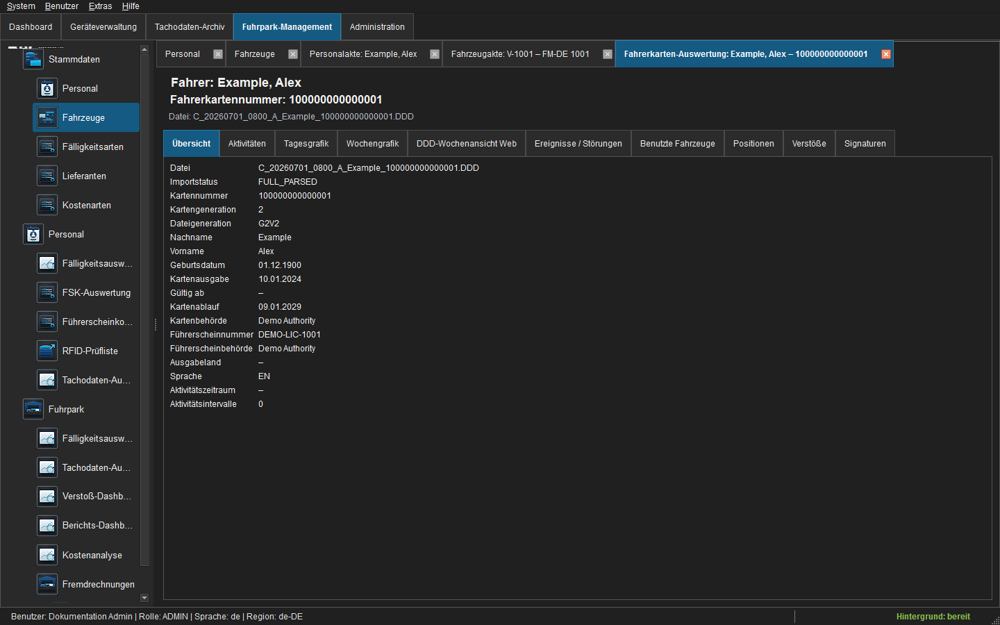
Abbildung: Fahrerkarten-Auswertung für ein ausgewähltes C-Archiv.| Tab | Zweck |
|---|---|
| Übersicht | Identität, Gültigkeit, Behörden, Generation und Datenzeitraum |
| Aktivitäten | sortierbare UTC-Intervalle mit C-/M-Datenlage |
| Tages-/Wochengrafik | Zeitstrahl, Summen und Details des gewählten Zeitraums |
| DDD-Wochenansicht Web | interaktive Webansicht der ausgewählten Datei |
| Ereignisse/Störungen | technische Datensätze der Karte |
| Benutzte Fahrzeuge | auf der Karte erkannte Fahrzeuge |
| Positionen | Positionsliste und interaktive Karte |
| Verstöße | technische Vorprüfung nach VO (EG) Nr. 561/2006 |
| Signaturen | Zertifikatskette und EF-Einzelergebnisse |
Der Filter Datenlage unterscheidet alle Aktivitäten, C und M vorhanden, nur Fahrerkarte und nur Massenspeicher. Die Gegenquelle dient ausschließlich als Vergleichsnachweis und ersetzt die gewählte Basisdatei nicht. Alle Tachographenberechnungen verwenden UTC.
7. Massenspeicher-Auswertung¶
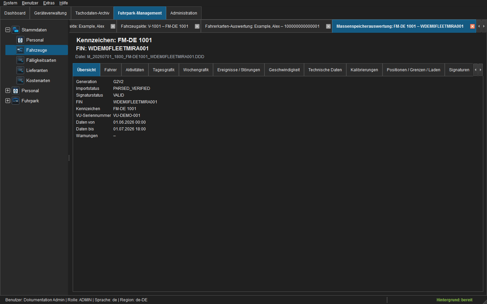
Abbildung: Massenspeicher-Auswertung für ein ausgewähltes M-Archiv.Die M-Auswertung zeigt Fahrzeugidentität und ausgewählte M-Datei. Fahrersitzungen werden nach normalisierter Kartennummer und Generation getrennt. Bei Teamfahrt bleiben Slot 1 und Slot 2 getrennt sichtbar.
Tabs umfassen Fahrer, Aktivitäten, Tages-/Wochengrafik, Ereignisse/Störungen, Geschwindigkeit, technische Daten, Kalibrierungen, Positionen/Grenzen/Laden, Signaturen und Verstöße. Technische Daten werden als Feldbaum dargestellt; Kalibrierungen zeigen Kalibrierzeit, nächste Kalibrierung, Werkstatt, FIN und Kennzeichen. Die Positionen öffnen eine interaktive Karte.
„Ohne zugeordnete Fahrerkarte“ bedeutet, dass die M-Datei für Slot und Zeitraum kein aktives Kartensteckintervall mit verwertbarer Kartennummer enthält. Es bedeutet nicht nur, dass eine passende C-Datei im Archiv fehlt; ein Tooltip erläutert dies in Tages- und Wochenansicht.
8. Fuhrpark-Management¶
Die linke Iconnavigation öffnet eindeutige Arbeitstabs. Eine neue Sitzung startet mit leerem Fuhrpark-Arbeitsbereich.
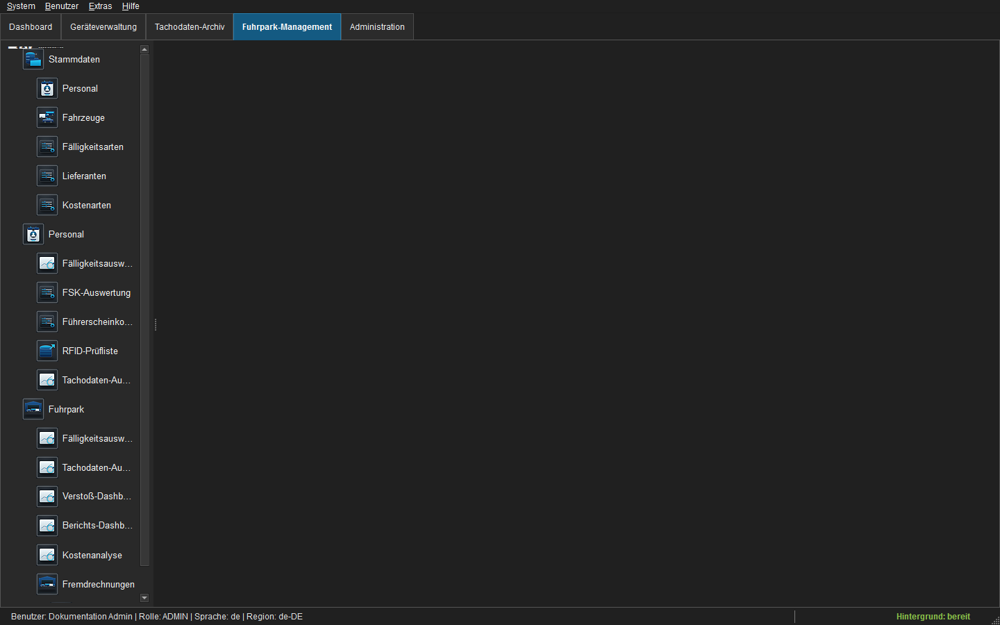
Abbildung: Iconnavigation und eindeutige Arbeitstabs im Fuhrpark-Management.Stammdaten¶
- Personal: Personalnummer, Identität, Kontaktdaten, Führerscheindaten, FSK-Regel und Status.
- Fahrzeuge: interne Nummer, Kennzeichen, FIN, Art und Status.
- Fälligkeitsarten: System- und benutzerdefinierte Arten für Personal/Fahrzeuge.
- Lieferanten / Kostenarten: Finanzstammdaten.
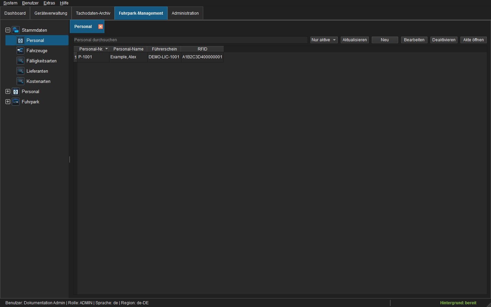
Abbildung: Personalstammliste.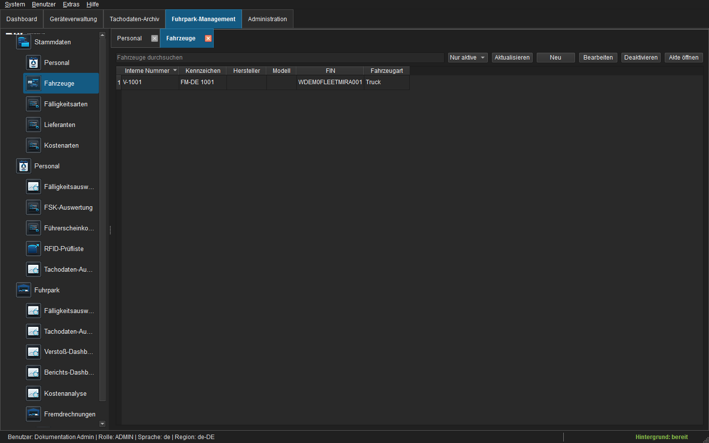
Abbildung: Fahrzeugstammliste.Doppelklick öffnet die jeweilige Akte. Kontextmenüs springen zu Fälligkeiten, Tachodaten, RFID oder Finanzdaten.
Unter Fuhrpark > Kostenanalyse werden die gebuchten Fahrzeugkosten ausgewertet. Der anfängliche Zeitraum reicht vom Jahresbeginn bis heute; Administratoren ändern die globale Vorgabe unter Administration > Kostenanalyse > Berechnungsparameter.
Personalakte¶
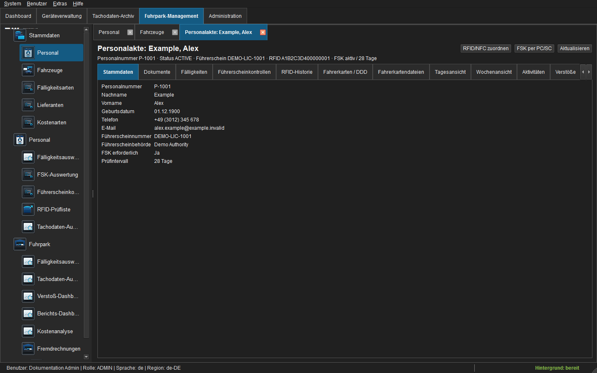
Abbildung: Personalakte mit den zugehörigen Fachreitern.Die Akte enthält Stammdaten, Fälligkeiten, Führerscheinkontrollen, RFID-Historie, Fahrerkartenverknüpfungen/-dateien, Tages-/Wochen-/Aktivitätsansicht und Audit. RFID/NFC zuordnen liest eine UID über PC/SC. FSK per PC/SC erzeugt nur dann eine Kontrolle, wenn die gelesene UID zur Person gehört.
Tagesansicht, Wochenansicht und Verstöße sind aktenbezogen: Bei Personal werden alle verknüpften Fahrerkarten einschließlich Kartenwechsel berücksichtigt, bei Fahrzeugen alle gültigen M-Dateien der verknüpften FIN. Der Befehl Einzelne Datei auswerten öffnet dagegen ausschließlich das gewählte C- oder M-Archiv.
Fahrzeugakte¶
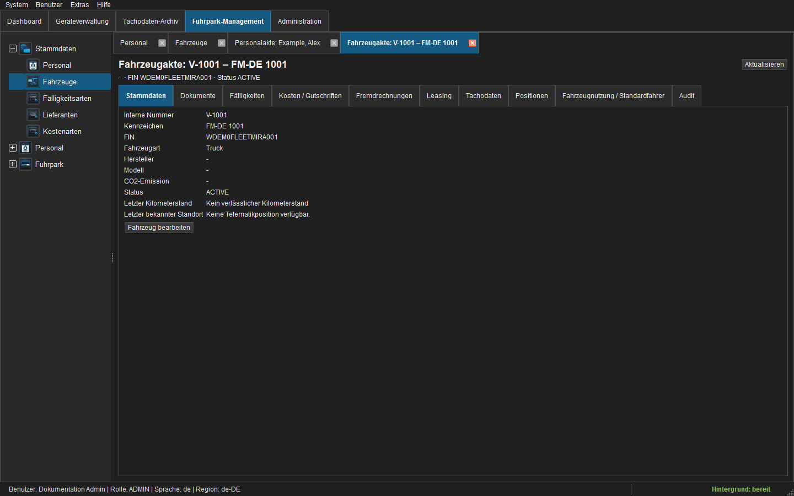
Abbildung: Fahrzeugakte mit Tachodaten-, Finanz- und Positionsreitern.Tabs enthalten Fälligkeiten, Kosten/Gutschriften, Fremdrechnungen, Tachodatenbezüge, M-Dateien, Fahrer/Aktivitäten, Ereignisse/Störungen, Geschwindigkeit, technische Daten, Kalibrierungen, Positionen und Audit. Die aggregierten Fachtabellen blenden die technische Quellspalte standardmäßig aus; das Quellarchiv bleibt über das Kontextmenü erreichbar. Identische technische Daten werden einmal mit ihrer Quellenanzahl und dem vollständigen Detailbaum dargestellt. Die Positionsliste lässt sich gemeinsam auf der Karte öffnen.
9. Fälligkeiten und Downloadtermine¶
Personal- und Fahrzeugauswertung sind getrennt, verwenden aber dieselbe sortier-/filterbare Komponente. Jede Fälligkeit besitzt einen individuellen Vorlauf; Standard sind zehn Tage. Farben:
- grün: außerhalb des Vorlaufs;
- blau/orange: bald anstehend oder heute fällig;
- rot: überfällig;
- erledigt: mit Erledigungsdatum geschlossen.
Automatische Downloadfälligkeiten werden durch das System verwaltet:
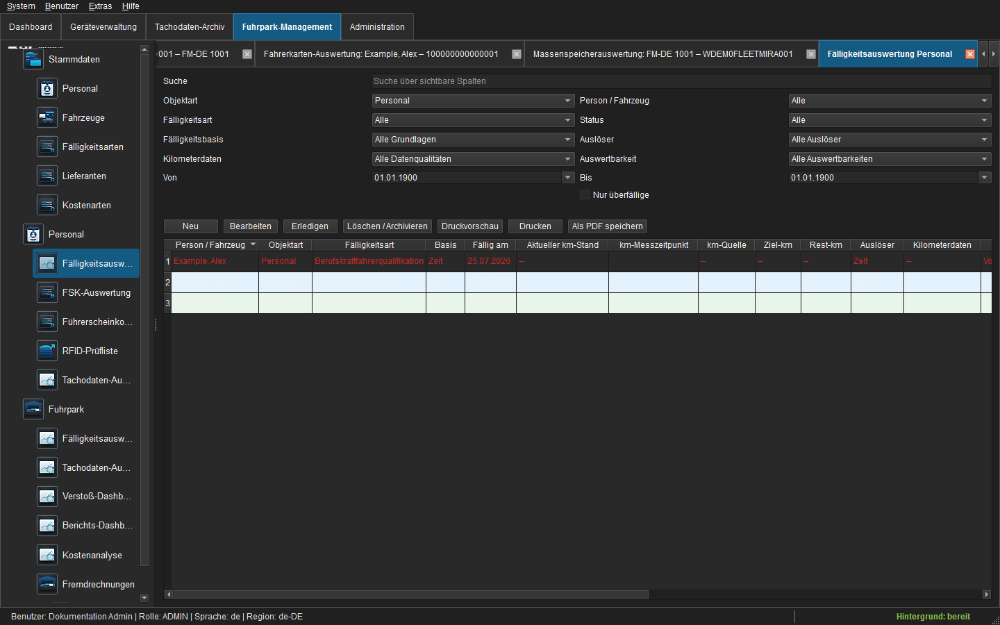
Abbildung: Filterbare Fälligkeitsauswertung für Personal.- aktuelle Fahrerkarte: Auslesedatum + 28 Tage;
- per FIN zugeordnete Fahrzeugeinheit: Auslesedatum + 90 Tage.
Das Auslesedatum stammt aus einem gültigen C_YYYYMMDD_HHmm...-/M_YYYYMMDD_HHmm...-Namen, ersatzweise aus UTC-Quelldatei-, Download- und Archivzeit. Automatische Fälligkeiten sind nicht manuell verschieb-/erledigbar. Die Tachographenkalibrierung bleibt eine separate Fahrzeugfälligkeit.
10. Führerscheinkontrolle und RFID¶
Die vollständige Bedienung von FSK-Regel, UID-Zuordnung, PC/SC-Kontrolle, automatischem Folgetermin, Terminal-CSV und Klärfällen beschreibt Führerscheinkontrolle und RFID/NFC. Eine systemverwaltete FSK-Fälligkeit wird ausschließlich durch eine erfolgreiche Kontrolle erledigt; ein unbekannter oder einer anderen Person zugeordneter Chip erzeugt keinen Erfolgseintrag.
Der Personalbereich bietet FSK-Auswertung, Kontrollhistorie und RFID-Prüfliste. Das Standardintervall beträgt 28 Tage. Erfolgreiche PC/SC-, Terminal-CSV- und aufgelöste mobile Kontrollen aktualisieren über denselben Service genau eine verwaltete FSK-Fälligkeit. Die RFID-Zuordnung allein ist keine Kontrolle.
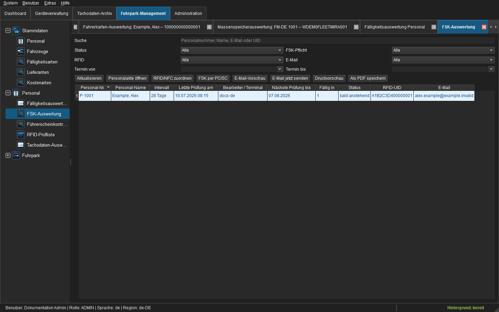
Abbildung: Termin- und Statusauswertung der Führerscheinkontrollen.Unbekannte Terminal-UIDs verbleiben als Klärfall. Eine Zuordnung erzeugt die wirksame Kontrolle; Verwerfen benötigt einen Grund und erzeugt keine dauerhafte RFID-Verknüpfung.
11. Benachrichtigungen¶
Unter Administration → Benachrichtigungen finden Sie SMTP, Verantwortliche, Regeln/Vorlagen und Versandprotokoll. Bis zum getesteten SMTP-Zugang, vorhandenen Empfängern und der ausdrücklichen Aktivierung bleibt der Versand deaktiviert.
 Abbildung: Benachrichtigungsregeln, Vorlagen und Zeitpläne.
Abbildung: Benachrichtigungsregeln, Vorlagen und Zeitpläne.
Standardregeln umfassen Wocheninformation, tägliche Erinnerung ab zehn Tagen, dringende Erinnerung ab drei Tagen, Überfälligwarnung und täglichen Verantwortlichenbericht. Regeln können mit Berechtigung vorgeprüft oder manuell versendet werden.
12. Kosten, Gutschriften und Fremdrechnungen¶
Direkte Fahrzeugkosten¶
Öffnen Sie Fahrzeugakte → Kosten/Gutschriften. Wählen Sie Kostenart und Typ und erfassen Sie Belegdatum, Gültigkeitszeitraum, Netto und Steuer. Variabel ordnet den vollständigen Betrag dem Belegdatum zu; fixe Positionen werden taggenau über ihren vollständigen Gültigkeitszeitraum verteilt. Beträge werden centgenau gespeichert. Die Schritte von Entwurf über Prüfung und Buchung bis Storno oder Gutschrift beschreibt Fahrzeugkosten und Gutschriften.
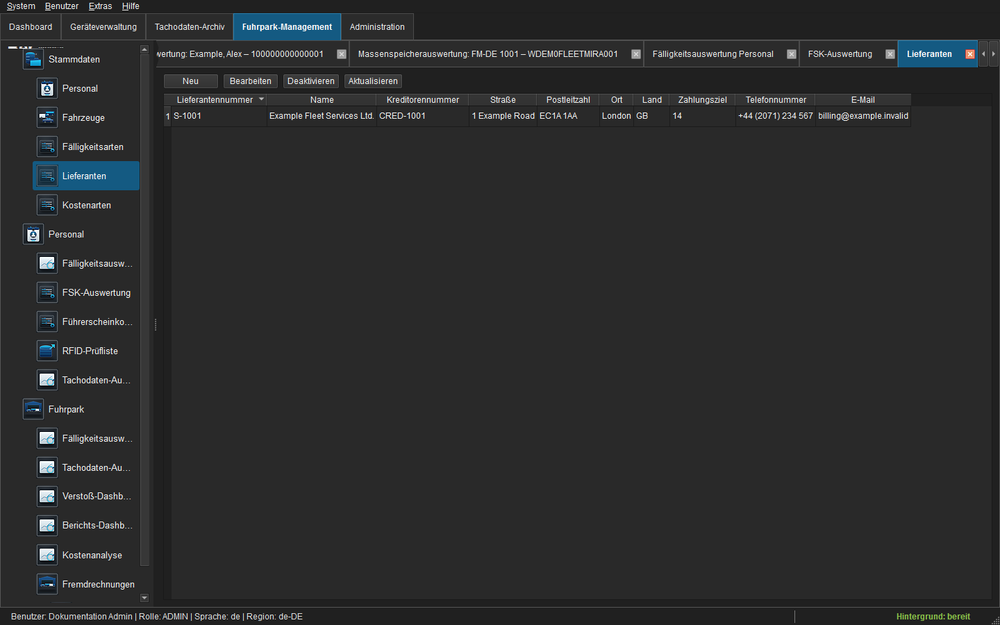
Abbildung: Lieferantenstammdaten für Finanzbelege.Fremdrechnungen¶
Öffnen Sie Fuhrpark → Fremdrechnungen und per Doppelklick einen eigenen Arbeitstab.
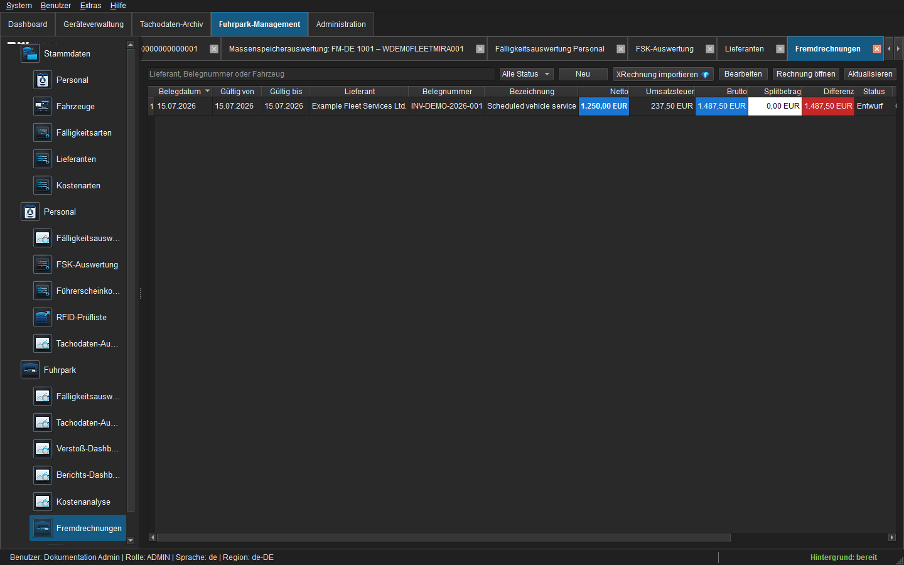
Abbildung: Fremdrechnungsliste und Einstieg in den Arbeitstab.flowchart LR
A[Entwurfskopf anlegen] --> B[Fahrzeugpositionen erfassen]
B --> C[Originalbelege hinzufügen]
C --> D[Cloud-Hash verifiziert]
D --> E[Summen prüfen]
E --> F[Buchen]
F --> G[FiBu-Export per REST oder CSV/ZIP]Die Statuszeile vergleicht Gesamtbrutto, Splitbetrag und Differenz. Null ist grün; jede Centabweichung rot und sperrt die Prüfung. Rechnungspositionen übernehmen Belegdatum als Beleg-/Gültigkeitsdatum und sind immer variabel. Gebuchte Datensätze sind unveränderlich; Korrekturen erfolgen per Storno oder verknüpfter Gutschrift.
E‑Rechnung/XRechnung¶
Fuhrpark → XRechnung importieren führt durch KoSIT-Validierung, Rechnungs- und Lieferantendaten, Fahrzeug-/Kostenartzuordnung, Positionssplits und Summenabgleich. Erst die bestätigte Übernahme legt atomar einen Fremdrechnungsentwurf und die lokal verifizierten Original-, XML- und Prüfberichtobjekte an. Einzelheiten enthält E‑Rechnung und XRechnung importieren.
13. Audit, Berichte und Logs¶
Das globale Audit unter Administration → Audit vereinigt Geräte-, Tachodaten- und Fuhrparkereignisse. Filter stehen nach Datum, Benutzer, Aktion und Text zur Verfügung. Doppelklick öffnet das aktuell zugehörige Fachobjekt, wenn die stabile ID auflösbar ist. Navigation wird nicht auditiert.
 Abbildung: Globales Audit-Log mit objektbezogener Navigation.
Abbildung: Globales Audit-Log mit objektbezogener Navigation.
Fälligkeits- und Auswertungslisten unterstützen Vorschau, Systemdruck und PDF. Ausgegeben werden sichtbare gefilterte Zeilen/Spalten.
Administration → Logs zeigt app.log, REST-Logs und native Crashdiagnose. Technische Logtexte sind unabhängig von der UI-Sprache Englisch.
14. Systray und Beenden¶
Das Schließen des Hauptfensters lässt Hintergrunddienste üblicherweise im Systray weiterlaufen. Über das Traymenü wird die Oberfläche wiederhergestellt. System → Anwendung und Dienste beenden beziehungsweise die gleichnamige Trayaktion führt den sauberen Shutdown von Scheduler, REST-API, Benachrichtigung, Backup und Logging aus.
15. Fehlerbehebung¶
| Symptom | Maßnahme |
|---|---|
| Datei quarantänisiert | Details/Signaturen öffnen; fehlende Kryptografie/Trustdaten installieren oder Quelle prüfen. Status nicht manuell ändern. |
| Backup bleibt ausstehend | aktives Ziel testen, Quota/Authentifizierung prüfen und Jetzt sichern verwenden. |
| Kein PC/SC-Leser | Treiber installieren, Leser neu verbinden und Dialog neu öffnen. |
| Kein C-/M-Vergleich | Kartennummer, Generation, UTC-Zeitraum und gültigen Signaturstatus prüfen. |
| Fremdrechnung nicht prüfbar | Splitdifferenz auflösen und mindestens einen lokal verifizierten Originalbeleg sicherstellen. Der Backupstatus blockiert die Prüfung nicht. |
| UI-Auftrag fehlgeschlagen | Erneut versuchen, danach app.log anhand Job-/Request-ID prüfen. |
Für Wiederherstellung und Betrieb siehe Administratoren- und Integratorenhandbuch.